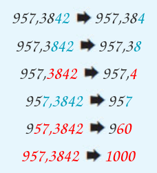

- Σε κάθε δεκαδικό αριθμό διακρίνουμε το ακέραιο μέρος και το δεκαδικό μέρος
του. Αυτά διαχωρίζονται από την υποδιαστολή.
- Στο δεκαδικό μέρος οι τάξεις είναι τα δέκατα, τα εκατοστά, τα χιλιοστά, τα
δεκάκις χιλιοστά, τα εκατοντάκις χιλιοστά, τα εκατομμυριοστά κ.λπ.
- Στο ακέραιο μέρος οι τάξεις είναι σε μονάδες, δεκάδες κ.λπ.
- Δέκα μονάδες μίας τάξης είναι μια μονάδα μεγαλύτερης τάξης.
- Αν δύο δεκαδικοί αριθμοί έχουν διαφορετικό ακέραιο μέρος, μεγαλύτερος είναι εκείνος που έχει το μεγαλύτερο ακέραιο μέρος.
|
8,97453 < 9,432
|
- Αν δύο δεκαδικοί αριθμοί έχουν το ίδιο ακέραιο μέρος, συγκρίνουμε
τα δεκαδικά τους μέρη, ένα προς ένα από αριστερά προς τα δεξιά και
βρίσκουμε το πρώτο ψηφίο στο οποίο διαφέρουν. Τότε ο αριθμός με
το μεγαλύτερο ψηφίο είναι ο μεγαλύτερος.
|
105,3842 > 105,37896 |
- Για να στρογγυλοποιήσουμε ένα δεκαδικό αριθμό:
– Προσδιορίζουμε τη δεκαδική τάξη στην οποία θα γίνει η στρογγυλοποίηση.
– Εξετάζουμε το ψηφίο της αμέσως μικρότερης τάξης.
– Αν αυτό είναι μικρότερο του 5, το ψηφίο αυτό και όλα τα
ψηφία των μικρότερων τάξεων αντικαθίστανται από το μηδέν.
– Αν είναι μεγαλύτερο ή ίσο του 5, το ψηφίο αυτό και όλα τα
ψηφία των μικρότερων τάξεων αντικαθίστανται από το μηδέν
και το ψηφίο της τάξης στρογγυλοποίησης αυξάνεται κατά 1..
|

|